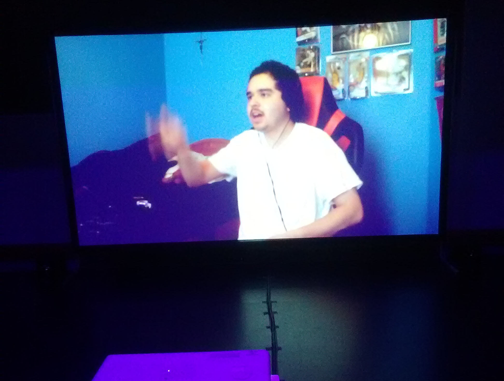
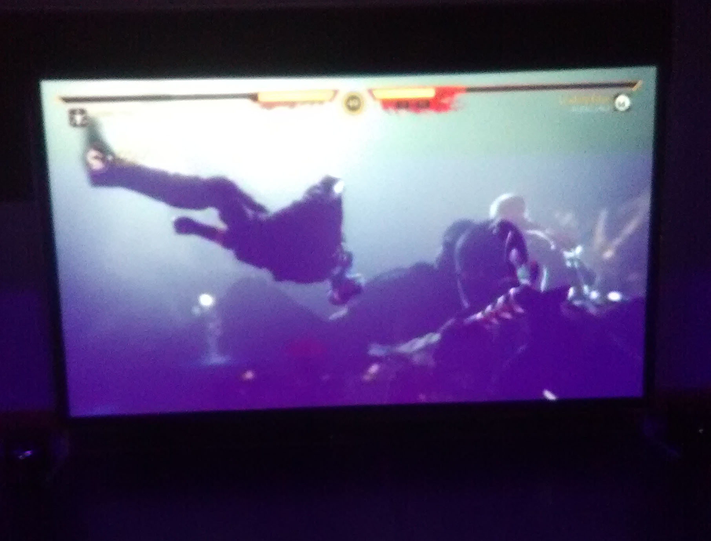

Artist Statement
Video games have been a form of entertainment for many years now allowing the players the ability to immerse themselves in a brand new world for which their choices can have an impact on the games they play. With this in mind with the advancement of technology over the years studios have been able to give a real life like experience in these words which include content that could be very gory or sexualized. As a result much like with movies a rating system has been developed to help guide parents know what kind of content is the games their children are playing. With the increase in violent crimes such as mass shootings affecting schools many are putting the blame on video games because they are what influences or gives people the idea of wanting to perform these horrific actions. But as many studies have shown that is not true. Games have had many battles ranging from if they should be considered art to now this.
With all of this in mind this has been a huge influence on my work for my BFA show here at San Jose State, by creating a video that is not only humorous but also helps the viewer spark a lightbulb in their head helping them realize that games are not the true cause of these violent actions and that these can be avoided if parents ensure that they control what games or shows they consume as well as letting them know the difference between what is allowed in a virtual reality and the real world.
During the Show
 